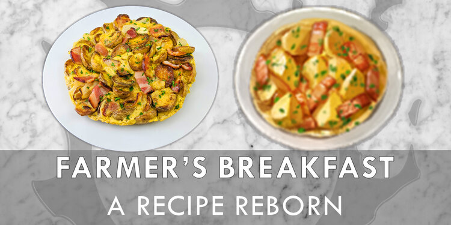
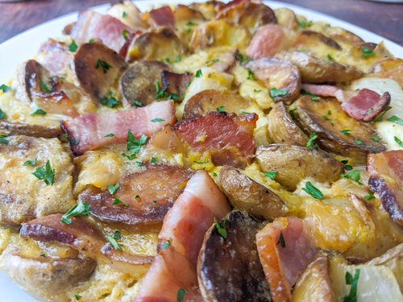
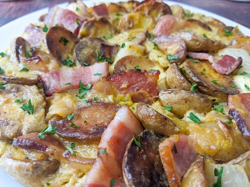

Farmer's Breakfast

 

“This simple-yet-delightful dish of popotoes and lightly scrambled eggs will fill you up before a day of tilling the fields.” - Eorzea Database
EXP Bonus: +3% Duration: 30m
Here's what you'll need.
Ingredients
-
Potatoes (Russet Popoto)
-
Medium Sized Onion (Cyclops Onion)
-
Bacon (Ovim Meat)
-
Olive Oil (Frantoio Oil)
-
Eggs (Silkie Egg)
-
Salt
-
Black Pepper
-
Parsley (Curly Parsley)
Steps
-
Cut the potatoes, onion and bacon into 1.5” or 4 cm pieces. Rinse and dry the potatoes thoroughly.
-
Preheat the oven to 400°F/205°C.
-
In a medium sized heavy-bottomed oven safe pan, heat the olive oil over medium-high heat.
-
Fry the potatoes until they are brown on one or two sides, about 3 minutes per side. Drain on paper towel.
-
Toss the bacon and the onion with the potatoes, place the pan in the oven and bake for 20 minutes.
-
Using oven mitts, remove the pan from the oven.
-
Stir in the eggs, salt and pepper.
-
Return the pan to the oven and bake for 10 minutes, or until the eggs reach your desired level of doneness.
-
Garnish with parsley and serve and enjoy.